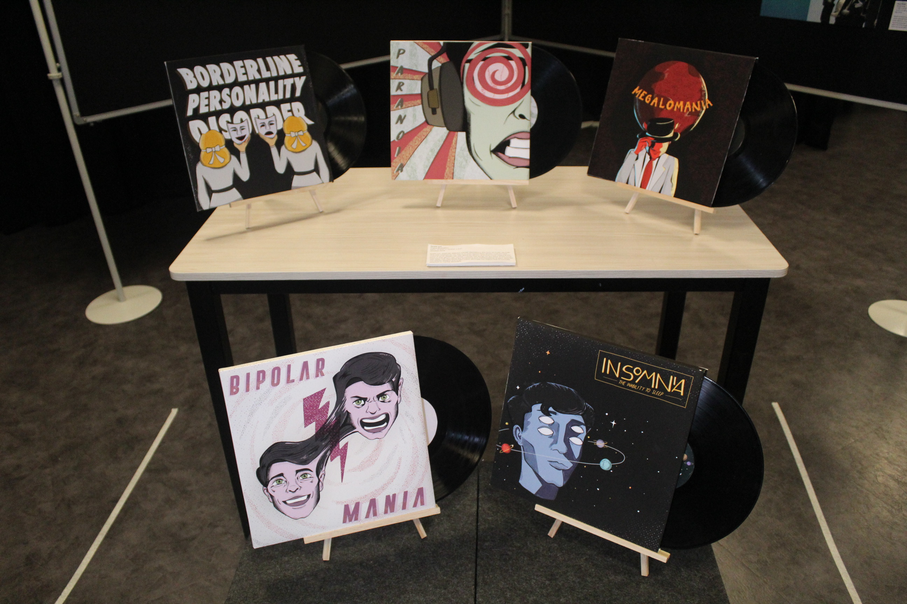
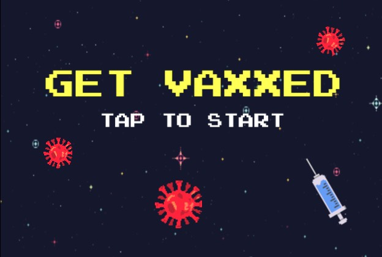
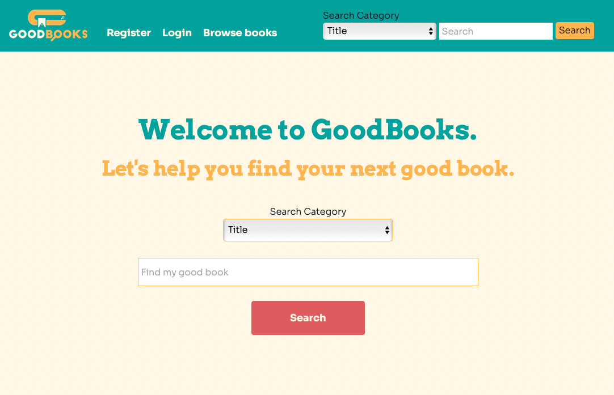
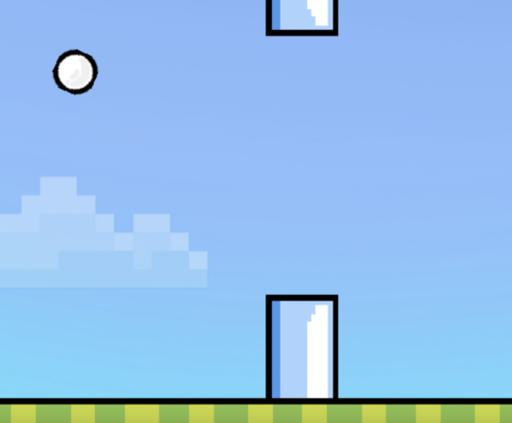

A bit about me!
i'm chalu, and i'm a 22 year old penultimate year computer science and statistics student in auckland, new zealand. i'm very keen on learning more about the tech industry and i have a strong interest in software development, data science, UX/UI design, web design, and iOS app development.
i'm from the philippines and have worked in freelance graphic design and illustration, as well as working as a creative intern for ad agency in my gap year. i finished the last two years of high school in malaysia before moving to new zealand for university. i love digital art and while i'm studying something completely different, i still draw whenever i can and am constantly trying to develop my skills!
i love muay thai, drawing, playing guitar, running, reading books, making and drinking coffee, and binge watching tv shows. the x files is my favorite show, and i kind of believe in aliens.
my experienceExperience
Academic
I'm a final year Computer Science and Statistic student in the University of Auckland also completing the Software Development and Data Analysis modules. In 2021 I joined the Startmate Student Fellowship where I learned a lot about the startup ecosystem. In 2019, i graduated from the International Bacclaureatte Program at St. Joseph's Institution International Malaysia with a Group 4 Graduate Award in the Arts. I also qualified for the World Scholar's Cup championships in Yale University back in 2018 where I took home over 15 medals and placed 7th overall scholar at a district level. I went to high school in the Philippines and left with Bronze Honours, and a major highlight was being selected for the Tokyo Tech Exchange Program.
Work
I worked as a Resident Advisor at the University of Auckland in 2021 and my internship experience include being a creative intern at MullenLowe, a summer intern at KPMG Lighthouse, and a connected devices software engineering intern at an NZ startup called Rfider. Non-tech-related skills include making coffee and drinking lots of coffee.
Volunteer
I am currently Microsoft Student Partner and worked in the Data Science Stream of the 2021 Microsoft Student Accelerator Program. I am also in the executive team handling public relations for the University of Auckland Muay Thai Club, and a UniGuide.
My art
i share a lot of my art on my instagram, but here are a few pieces i particularly like!
A vintage-style comic influenced by a poster I saw while in Portugal: “All feelings are valid. Every single one.” It delivers the message that being emotional is not a negative trait and we should not be afraid to express our feelings. The text aspect of comic strips as well as my literal interpretation of each part of the saying allowed me to create artwork that directly states its own message.
A faux music record cover project inspired by my visit to a vinyl record store where I noticed how much a cover design can say about an album, and how much meaning the lyrics in that album can convey. I chose real songs for the back of the cover with titles I felt described the symptoms and manifestations of each disorder. The playful designs and bright colors eliminate the stigma that is normally attached to mental disorders.

A triptych with hands that I worked on to practice drawing hands and shadows. Inspired by celestial and mystical aesthetics, each hand has a different "theme" with different surroundings in each illustration.

A clothing/pose study I did to work on illustrationg how clothes fall on bodies. Two of the three are slightly heavily influenced by Mulder and Scully from the X-Files in a modern-day setting (hence, the FBI jackets)
My projects
Spill The Beans

Django
Bootstrap 5
HTML/CSS
A Django social networking site for Coffee enthusiasts. Users can create profiles to share their daily grind, review coffee drinks/beans/machines to spill the beans regarding their latest finds and new favorites.
Get Vaxxed
Swift
Simple space-invader-type game, with a twist! In line with the COVID vaccination campaign, I made a simple game where you need to move the syringe and shoot doses of COVID vaccines at the many Mr. Ronas coming your way!
GoodBooks
Python Flask
Jinja2
HTML/CSS
A Flask app made for COMPSCI 235: Software Development Methodologies. Uses Jinja2 for templating. This is a web app that pretty much emulates GoodReads. Users can register, login, save books to a personal library, and leave reviews.
Ball Jump ⧉
Python
PyGame
A simple Flappy Bird immitation game, because it is long gone from the app store and something needs to fill the void. Tap the ball to make it jump and avoid the pipes to stay alive and earn points. All assets were made by yours truly. The first game I attempted making in the summer after my first year of computer science.
X-Files Command Line Episode Recommendation App ⧉

Python
The very first project I made on my own time in my first year of my CS degree. The program reads files of all the X-Files episodes. It runs on the command line and the user simply needs to follow the steps to get an episode of your choice in return. No more spending hours to decide which X-Files episode to watch tonight :)